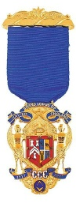
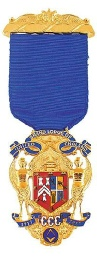

© 2017 Masonic Hall (Radlett) Ltd. All Rights Reserved.
Copyright of Material: The Masonic Hall (Radlett) Ltd logo, photographic images, graphics and content is protected by copyright may not be copied, used, or distributed in any form or manner without the expressed permission of the Masonic Hall (Radlett) Ltd. If you wish to use, or copy, any of the information contained on this website, please write to: Company Secretary, Masonic Hall (Radlett) Ltd., The Rosewalk, Radlett, WD7 7JS.
Disclaimer:We do not guarantee that websites accessed via links on this page are either Masonic in nature or have been approved or endorsed by the United Grand Lodge of England. We specifically do not warrant that another website accessible from their pages are recognised by, or have the approval of, the United Grand Lodge of England.
What Is Freemasonry?
Freemasonry is one of the world’s oldest and largest non-
Freemasonry means different things to each of those who join; for some, it’s about making new friends and acquaintances; for others it’s about being able to help deserving causes, but fundamentally, Freemasonry is not a vehicle for self promotion or preferment. Freemasonry offers its members an approach to life which seeks to reinforce thoughtfulness for others, kindness in the community, honesty in business, courtesy in society, and fairness in all things. Freemasonry also teaches and practises concern for people, care for the less fortunate, help for those in need, and to regard the interests of the family as paramount.
Above all, Freemasonry is a most enjoyable hobby.
Frequently Asked Questions
Meetings, which like those of other groups, are open only to Freemasons, and are usually in two parts:
Administrative procedures such as:
- Minutes of the previous meeting
- Proposing and balloting for new members
- Discussing and voting on the annual accounts
- Masonic news, correspondence, and charitable work
Ceremonial procedures such as:
- The annual installation of the Master of the Lodge and the investiture of Officers
- Admitting new and joining members and the conferment of the Masonic Degrees
New members make solemn promises concerning their behaviour both in the Lodge and in society. Members also promise to keep confidential the way they recognise each other when visiting another Lodge. Freemasons also promise to support others in time of need but only so far as it does not conflict with their family and public obligations
Wearing regalia is historic and symbolic. Like a uniform, the regalia indicates the rank of the wearer in the organisation.
Basic Freemasonry consists of three degrees:
- Entered Apprentice
- Fellow Craft
- Master Mason
It varies from Lodge to Lodge but basically can depend on the meeting venue, number of meetings, and dining venue. However, anyone wishing to join should be able to find a Lodge to suit his pocket. On joining the Order, there will be an initiation fee, a Metropolitan/Provincial fee, and a Lodge joining fee. In addition there will be a Lodge annual subscription, dining fees, and in due course, regalia will have to be bought; i.e. if it is not handed down or gifted. Some Lodges include the dining fee within the annual subscription, some not.
Members are invited to give to charity but this should always be within their means and it is entirely up to the individual how much they wish to contribute.
Freemasonry exists throughout the world. However, each Grand Lodge is sovereign and independent. There is no international governing body for Freemasonry.
Worldwide, there are approximately six million Freemasons ranged under the jurisdiction of a number of Grand Lodges, some of which extend their influence beyond their own national borders.
England, Wales some overseas districts come under the jurisdiction of the United Grand Lodge of England with over 200,000 Freemasons. In Ireland, which covers both Northern Ireland and Eire, and Scotland there is a combined total of approximately 150,000 members.
Whilst there are four main Masonic charities, under the stewardship of the Masonic
Charitable Foundation, which cater specifically but not exclusively for Freemasons
and their dependants, there other routes through which Freemasons make significant
grants to many other non-
All Freemasons are expected to have a religious belief, but Freemasonry does not seek to replace a Mason’s religion or provide a substitute for it. It deals in a man’s relationship with his fellow man not in a man’s relationship with his God
Yes. Four Grand Masters of English Freemasonry have been Roman Catholics. Today there are many Roman Catholic Freemasons.
There are elements within churches who misunderstand Freemasonry and its objectives. They confuse secular rituals with religious liturgy. There are many Masons in churches where their leaders have been openly critical of the organisation. Masonry has always actively encouraged its members to be active in their own religion
Freemasonry, as a body, will never express a view on politics or state policy.
The
discussion of politics at Masonic meetings has always been strictly prohibited.
Certainly not. This would be unacceptable and may lead to action being taken against those involved. On joining, each new member states that he expects no material gain from membership.
Yes. Whilst UGLE, following the example of medieval stonemasons, is, and has always been, restricted to men, women Freemasons have two separate Grand Lodges, which are restricted to women.